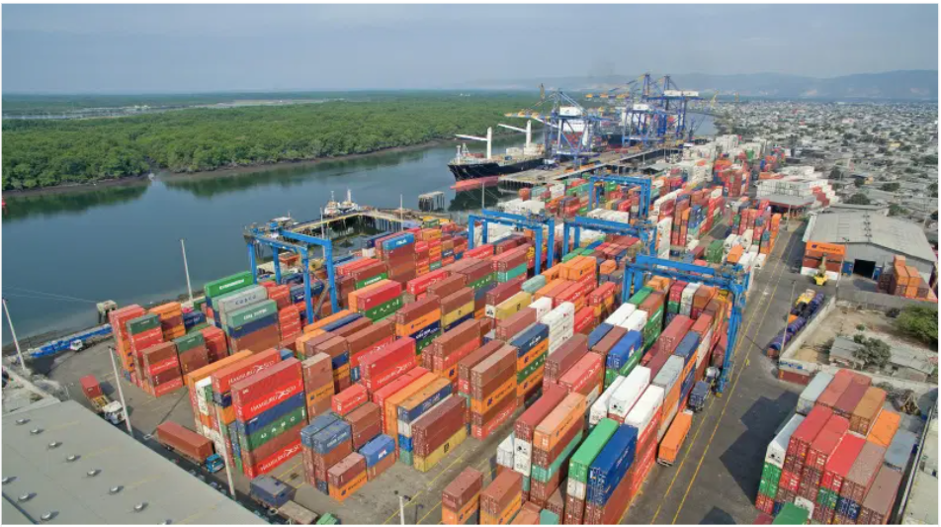
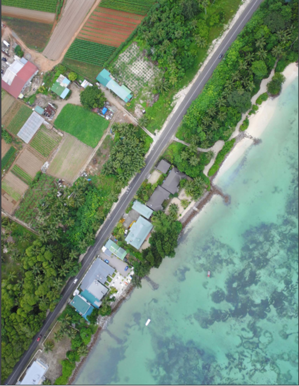
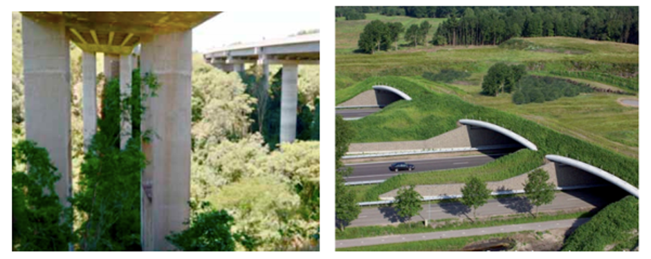
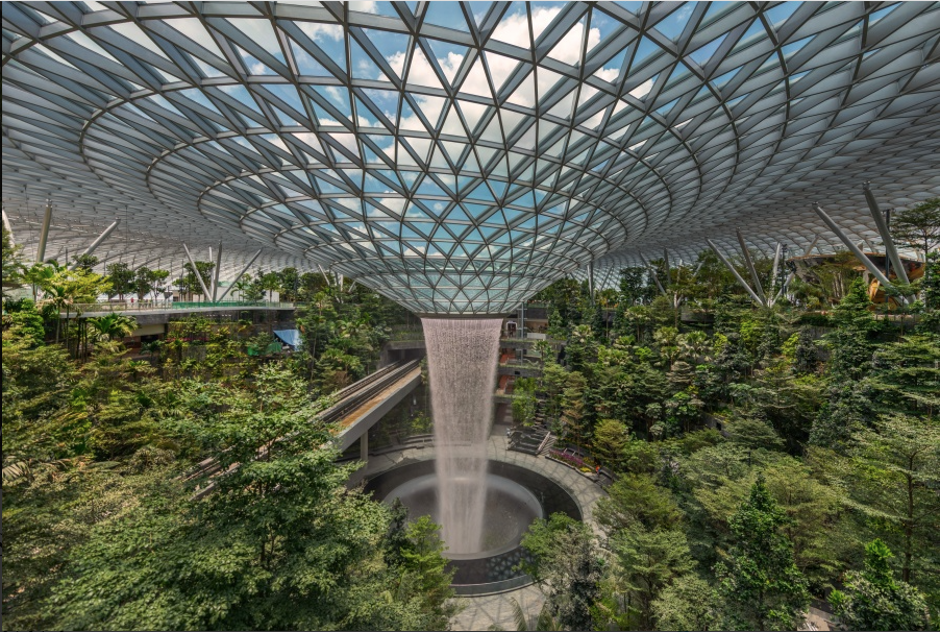
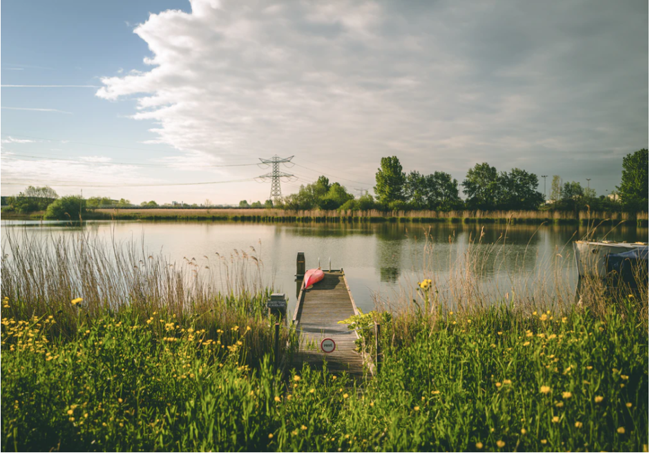
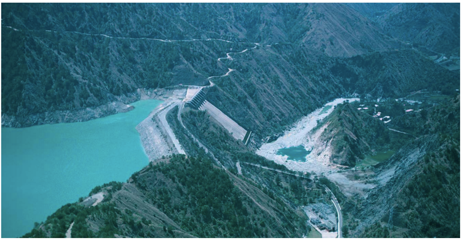
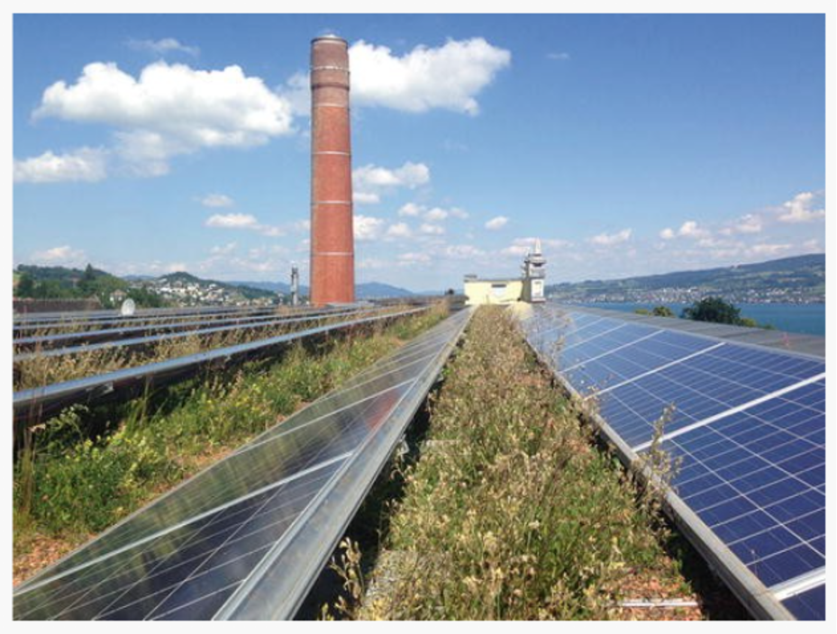

This mini-lecture will consider the ways in which nature-based solutions (NbS) can be integrated into built infrastructure networks for sector-related benefits. It will look at the potential for leveraging NbS in transport networks (water, road and rail, air), transmission lines (energy and digital communications) and in the energy sector more broadly.
Consider how NbS can be integrated into transport networks for improved service delivery
Consider how NbS can be integrated into the energy sector for improved service delivery
Consider how NbS can be integrated into transmission line networks.
While water transport infrastructure is predominantly reliant upon grey infrastructure, such as ports, harbours, networks of canals, etc., nature-based solutions (NbS) can provide multiple benefits to the sector and beyond if implemented with consideration, at costs comparable or lower than engineered alternatives.
Due to their low-lying nature and proximity to the coastal zone, ports and harbours are at risk of climate impacts including flooding and storm surges. Ecosystems such as mangroves, seagrass, reef systems (coral and oyster) and beaches can be leveraged through NbS in order to prevent flooding and erosion of ports and increase their resilience to climate change (Figure 17.3.1) (Hijdra 2021). Furthermore, NbS can provide additional benefits to the sector, by mitigating wakes from boats and reducing erosion of banks, thus preventing sedimentation of shipping channels, reducing dredging requirements and associated costs, whilst extending the lifespan of harbour walls (Vital Ports n.d.). Equally, NbS can help to maintain tranquillity of waters to support navigation. The use of living harbour wall systems can help to extend grey infrastructure lifespans and reduce pollution of port waters (Perkol-Finkel et al. 2018).

Figure 17.3.1: Mangroves and other coastal and marine ecosystems can protect ports from climate impacts, support tranquillity of waters and increase navigability of shipping channels by reducing sedimentation and mitigating erosive forces from passing boats (Paalvast et al. 2012). Photograph Hijdra (2021).
There are various options for integrating NbS into river, canal and lake systems (European Commission 2018). For example, riparian vegetation along water courses can deliver services including biological and pest control. This can improve navigability of water courses and reduce the frequency of control procedures by preventing algal blooms which clog waterways. Equally, creation of vegetated buffer strips can reduce sheet, bank and stream erosion, which may result from water wakes created by boats and cause sedimentation of channels. Wetlands and reeds can mitigate channel flooding, filter pollutants and trap sediments, as well as dissipate wave energy and erosive forces on riverbanks from passing boats (Madramootoo et al. 1994).
Table 17.3.1: Examples of NbS that can be implemented to enhance water transport services (Hijdra 2021; Vital Ports n.d.; Perkol-Finkel et al. 2018; Paalvast et al. 2012; European Commission 2018; Madramootoo et al. 1994)
| Service | Ports and harbours | Rivers, canals and lakes |
|---|---|---|
| Resilience to coastal hazards (mini-lecture 16.2) |
|
|
| Tranquil waters for navigation |
|
|
| Reduce sedimentation of navigation channels |
|
|
| Reduction of erosive forces from boats |
|
|
| Regulation of water supply in navigation channels |
|
|
| Mitigation of pollution from water transport |
|
Road and rail networks have a fundamental role to play in meeting basic service needs, through facilitating the mobility of people and goods (United Nations 2016). With huge development needs for transport infrastructure (e.g. an estimated 25 million kilometres of roads by 2050 (Kennedy et al. 2019)) and many existing transport infrastructure networks under increasing stress from climate impacts, there is a huge opportunity to design and integrate combined natural-built transport networks to support and enhance service delivery within the sector.
For example, the strategic implementation of adjacent ecological networks or corridors can mitigate flooding, stabilise sediments in order to reduce the impact of landslides, act as firebreaks to prevent the spreading of fires, and shade transport networks in order to reduce the impacts of temperature or snowfall (Kapos et al. 2019; Black, Tara, and Pakzad 2016). As such, ecological corridors in the form of verges and slopes along linear transport networks can reduce long-term costs for maintenance and increase the lifespan of engineered assets (Figure 17.3.2) (European Commission, n.d.b).

Figure 17.3.2: NbS can protect road and rail infrastructure networks from climate impacts. Photograph from Browder et al. (2019).
The implementation of specific ecological infrastructure structures, such as overpasses or underpasses, can further increase the resilience of the sector, by facilitating the safe movement of wildlife and preventing wildlife-induced transport collisions (Figure 17.3.3) (Asian Development Bank 2019).

Figure 17.3.3: Ecological underpasses and overpasses (Asian Development Bank 2019; European Commission, n.d.b)
Furthermore, restoration of trees along road networks can provide additional benefits to the road sector. For example, studies report that trees can increase the attention span of drivers, act as a buffer between pedestrians and vehicles, and make the street feel narrower, thus reducing the driving speed of cars (GMCA 2019).
The benefits offered by integrating NbS in the transport sector are leading to increased uptake across Europe, including in the TRANSGREEN project which is designing an integrated transport and ecological network in Europe for improved safety and biodiversity benefits (European Commission 2013; Interreg Danube n.d.).
Opportunities to integrate NbS into built infrastructure sectors extend to the air transport sector, where they can be leveraged for sector-related benefits. Such benefits include reducing airport costs, extending infrastructure lifespan and enhancing the health and wellbeing of passengers and staff. For example, Chicago O’Hare airport has > 338,000 ft^2 green roofs across 12 buildings. They retain up to 90% precipitation (2 million gallons of stormwater annually), which help double roof lifespans and save the airport USD1.5 million in re-roofing costs (Airport Technology 2016).
Chicago O’Hare airport and Portland International Airport have implemented grazing programmes, which avoid the use of motorised mowing equipment and herbicides (Airport Technology 2016). This provides cost savings to the airport (e.g. by reducing the need for fuel and equipment), whilst providing wider co-benefits including improved air quality, reduced water contamination and reduced soil erosion.
Through the provision of services including regulation of air quality, microclimate and noise, NbS can relieve passenger stress and offer additional sector benefits by increasing airport loyalty (Trofimova 2020; Han, Lho, and Kim 2019). For example, Portland international Airport Terminal 4 has implemented a green wall consisting of >20,000 species, which regulates temperature and improves air quality. Furthermore, Singapore’s Changi airport has incorporated various gardens and NbS features (Figure 17.3.4) which has led to the airport being considered a visitor attraction in its own right and has contributed to Singapore’s reputation as a city in a garden (Henderson 2017; Newman 2014; Airport Technology 2016).

Figure 17.3.4: Singapore’s Changi Airport includes multiple gardens and an open dome to allow rainfall to be captured by an indoor waterfall and forest, which provides cooling and energy savings to the airport, saving the airport money whilst supporting regulation of the indoor microclimate. Photograph from Unsplash.
Transmission networks provide essential services to people, through facilitating the transmission of electricity and communications. NbS can support the delivery of these services through the protective services that they offer, and by reducing the maintenance required by the sector.
For example, trees can be a major problem for energy network safety, as they can interfere with transmission infrastructure. This is usually managed by clearing vegetation through costly and frequent mulching and manual cutting, which can exacerbate the problem through dispersing new seedlings (Life Elia n.d.a; European Commission n.d.a). NbS, such as the creation of orchards, can reduce problematic tree species and simultaneously safeguard rare species, attract pollinators and fauna, and increase the aesthetic appeal of the landscape. Restoration of rare habitats (e.g. peatlands, grasslands) or improved grazing management, can provide similar benefits, and be compatible with electrical safety due to their low height.
Planting or restoring thorny woodlands along the edges of electrical transmission lines can help to deter encroachers if required, to provide additional safety measures.
NbS can also help to increase public acceptance of energy transmission line projects, by providing a series of benefits to the local community.
For example, the LIFE ELIA project has implemented NbS to demonstrate how electricity transmission networks can reduce maintenance costs through restoring peatlands and other habitats with low-lying vegetation under power lines, whilst improving biodiversity (Figure 17.3.5). The project was shown to break even in 3-12 years and become 1.4-3.9 times cheaper (depending on the NbS) than traditional methods after 30 years (European Commission 2013; Life Elia n.d.a, n.d.b).

Figure 17.3.5: The LIFE ELIA project restored 130km of different ecosystems in ecological corridors under overhead electricity transmission networks (2011-2017). It delivered additional benefits including pollination, carbon storage, increased amenity value (European Commission 2013; Life Elia n.d.a). Photograph from Unsplash.
While grey infrastructure solutions will continue to have a fundamental role in the delivery of energy services going forward, NbS can complement and enhance energy sector service delivery, and enable electricity provision at lower cost (Arias et al. 2011).
NbS can provide multiple benefits to hydropower electricity service provision. For example, the restoration of forests and riparian vegetation along water courses upstream from hydroelectric reservoirs can ensure a regular supply of water, reduce sedimentation of reservoirs, and thereby reduce dredging and maintenance requirements and associated costs (Stickler et al. 2013; Kaura et al. 2019; Guo et al. 2007). Furthermore, by stabilising soils and preventing erosion, NbS can reduce turbidity within reservoirs, leading to reduced downtime and protecting the grey infrastructure asset from turbidity-induced wear and tear (Figure 17.3.6) (Browder et al. 2019).

Figure 17.3.6: NbS can increase the lifespan of built infrastructure through reducing erosion. Photograph from Browder et al. (2019).
By maintaining ecosystems, such as wetlands, around solar panels, energy service providers can benefit from increased energy efficiency of solar power generation, through the temperature regulating services that ecosystems provide. Furthermore, the implementation of NbS in the form of green roofs can enhance solar power service delivery, by acting as a substrate to anchor solar panels and increasing their energy efficiency by as much as 20% (Figure 17.3.7) (Enzi et al. 2017; Semeraro et al. 2020).

Figure 17.3.7: Green roofs can anchor on green roofs, protect panels from weather impacts and support energy efficiency. Photograph from Enzi et al. (2017).
The restoration, management or creation of new ecosystems around fixed energy assets can protect grey infrastructure assets and safeguard service delivery in a changing climate (Semeraro et al. 2020).
Built infrastructure networks, such as transport (road, rail, water and air), energy and digital communications, typically rely on grey infrastructure assets for service delivery. However, there are several opportunities to leverage nature, through nature-based solutions, to enhance the delivery of sector services. By integrating nature into engineered networks, sectors can enhance service delivery, reduce maintenance requirements, benefit from cost savings, whilst delivering wider benefits for people, biodiversity and the environment.